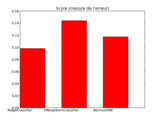
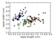
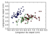
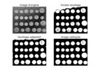
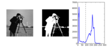

Examples¶

example_Advection.py

example_Advection_corr.py

example_Diffusion.py

example_Diffusion_corr.py

example_Projection.py

example_VonKarman.py

example_VonKarman_corr.py

example_document_high_dim.py

example_plot_color_grey.py

example_plot_document_classification.py

example_plot_example_intro.py

example_plot_filter_coins.py

example_plot_granular.py

example_plot_intro.py

example_plot_iris.py

example_plot_iris_simple.py

example_plot_mini_mondrian.py

example_plot_numpy_array.py

example_plot_numpy_interaction.py

example_plot_segmentation_coins.py

example_plot_threshold.py